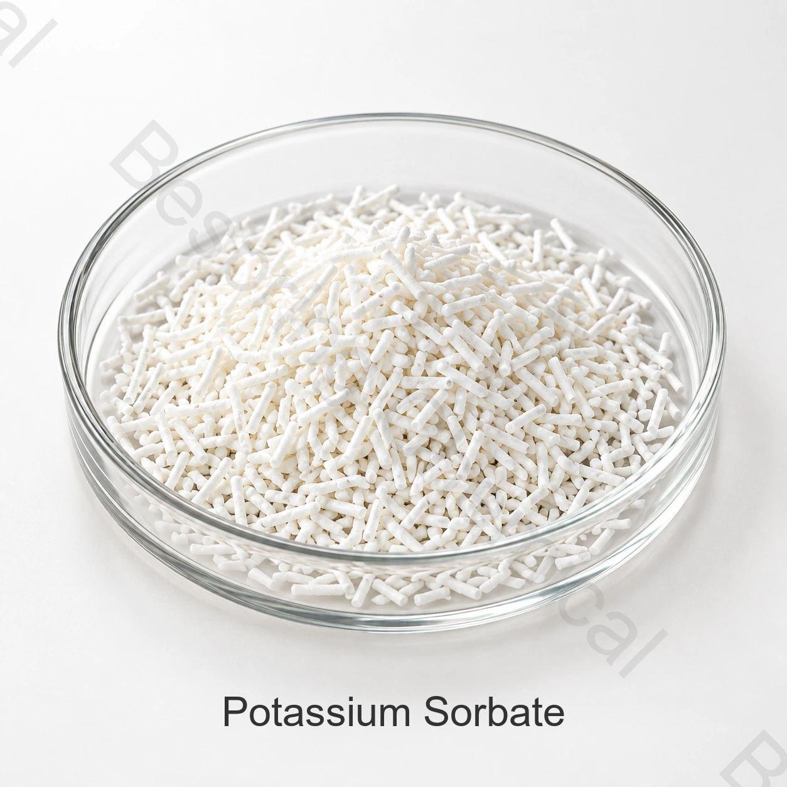

Продукты пекарни
Оцените ингибирование плесени, вкус и срок годности в выпечке, печенье и хлебе.
Ингредиент пищевого качества · консервант · INS 202
Сорбат калия - это калийная соль сорбиновой кислоты, широко используемая в подходящих кислотных продуктах и напитках для ингибирования плесени и дрожжей.

Кратко о продукте
Сорбат калия пищевого качества INS 202, CAS 24634-61-5 и формула C6H7KO2Поставляемый сорт является белым или почти белым гранулированным материалом.
Поставляемые коммерческие лимиты должны соответствовать точному классу, категории предполагаемых продуктов питания и правилам целевого рынка. Одно только название продукта не устанавливает нормативного соответствия.
Области применения
Подтвердите законное использование, дозировку, технические характеристики и сенсорное воздействие на готовый продукт.
Оцените ингибирование плесени, вкус и срок годности в выпечке, печенье и хлебе.
Оцените контроль дрожжей и плесени при соблюдении правил для напитков.
Подтвердить дозу, рН, микробные цели и сенсорные эффекты.
Может поддерживать сохранение в подходящих кислых растительных продуктах.
Оцените разрешённое применение, остаточное содержание, микробиологические цели и условия процесса.
Оцените контроль плесени и дрожжей в совместимых пищевых эмульсиях.
Коммерческие справочные показатели
Таблица содержит коммерческие справочные показатели, а не результаты анализа партии или универсальные нормативные пределы.
| Показатель | Спецификация |
|---|---|
| Внешний вид | Белый или почти белый гранулированный материал |
| Содержание сорбата калия, сухая основа | 99.0–101.0% |
| Потери при высушивании, 105°C за 3 ч | ≤1% |
| Тепловая стабильность | Не менять цвет после 105°C в течение 90 минут |
| Кислота, как сорбиновая кислота | ≤1% |
| щелочность как карбонат калия | ≤1% |
| Хлорид | ≤0.018% |
| Альдегиды как формальдегиды | ≤0.1% |
| сульфаты | ≤0.038% |
| Свинец | ≤5 мг/кг |
| Мышьяк | ≤3 мг/кг |
| Ртуть | ≤1 мг/кг |
| Тяжёлые металлы (в пересчёте на Pb) | ≤10 мг/кг |
| Органические летучие примеси | Соответствует требованиям |
| Остаточные растворители | Соответствует требованиям |
Спецификация и применение: Коммерческий предел свинца ≤5 мг/кг выше предела ≤2 mg/kg в монографии JECFA. При заказе по JECFA согласуйте более строгую спецификацию и анализ партии. «Тяжёлые металлы в пересчёте на Pb» не заменяет отдельный анализ свинца. Дозировку и маркировку определяют для конкретной категории пищи и рынка.
Поддержка квалификации
Запросить текущую спецификацию / TDS, SDS, методы и типовой или COA на партию.
Проверяйте применимые документы HACCP, Kosher, Halal и ISO для точного продукта и производственной площадки.
Официальный источник: ФАО/ВОЗ JECFA калий сорбат рекорд. Условия применения определяются конкретным продуктом и рынком.
Хранение и обращение
Вопросы покупателя
Сорбат калия представляет собой калиевую соль сорбиновой кислоты, широко используемую в подходящих кислых продуктах и напитках для ингибирования плесени и дрожжей.
Коммерческая спецификация указывает 99,0-101,0%. Подтвердить согласованную спецификацию и СОА.
Справочная упаковка — 25 кг в мешке, а минимальный заказ составляет 500 кг.
Запрос спецификации / TDS, SDS, COA и соответствующих сертификатов качества пищевых продуктов.
Предоставьте форму заявки, класс или гидрат, спецификацию, количество, место назначения и дату доставки.
Связанные ингредиенты
Сравните состав, спецификацию и назначение отдельного ингредиента.
Сравните состав, спецификацию и назначение отдельного ингредиента.
Сравните состав, спецификацию и назначение отдельного ингредиента.
Поставка по согласованной спецификации
Укажите применение, спецификацию, количество, упаковку, место назначения и необходимые документы.